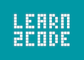
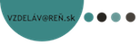
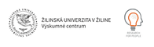
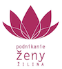
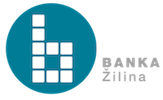
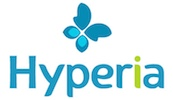

Hello world!
Rails Girls comes to Zilina! During the free two-day workshop we'll dive into the magical world of Ruby on Rails.
Apply now! Applications are open until the 3rd of October. / Prihlás sa teraz! Prihláška je otvorená do 3tieho Októbra.
You learn designing, prototyping and coding with the help from our coaches.
You need your own laptop, curiosity and a sprinkle of imagination!
Want to help? We are looking for volunteers and Rails coaches. Email us.
| 18.00 - |
Installation partyGet know the attendees a little bit before hand. Bring your laptop if you can, so we can install Ruby on Rails for you.Where: Banka Zilina, Legionarska 1, Zilina |
|---|---|
| 21.00 - |
Coach dinnerAll of the coaches are welcome to our coach dinner, where we'll go through the program for the next day. |
| 9:00 - 9:20 |
Registration, coffee and installation festDuring the morning we’ll install Ruby on Rails on your computer. |
|---|---|
| 9:20 - 9:45 |
WelcomeOutline of the day & word from sponsors |
| 9:45 - 13:30 |
Workshop (Coffe break included! :D)Designing your web appTryruby.orgLet's get coding!Jumpstart your first web application |
| 13:30 - 14:15 |
LunchYay ;) |
| 14:15 - 15:00 |
Lighting talks by successful womenInspiration and digestive juices working |
| 15:00 - 20:00 |
WorkshopBentobox - Understanding Web AppsRecap of what we’ve learned and how it all fits together.Extend your application. |
| 20:00 - |
AfterpartyOpen for everyone, meet cool people interested in tech. |
How much does the workshop cost? Nothing, it's free! You just need to be excited!
Who is this aimed for? Women of any age with basic knowledge of working with a computer. We’ve had people of all ages taking part. Most of the speeches and lectures are given in slovak, but small group work might be done in english. Please bring your laptop.
Can men attend? Yes, but you need to be accompanied by an interested lady. Also, girls are given a priority.
I know how to program - How can I help? We’re also looking for people to be coaches. We’ll have a two-three hour workshop before the event to walk you through the curriculum. Email us
Applications close: October 1st
Acceptances informed: October 3rd
Rails Girls Zilina is co-organized with our awesome partners.
Want to help? We're looking for partners & sponsors for the non-profit event! Email us!
V Learn2Code učíme ľudí designovať a programovať moderné webstránky a mobilné aplikácie. Robíme prezenčné aj online kurzy na Slovensku a v Čechách.
Azet.sk Jeden z najnavštevovanejších internetových portálov na Slovensku má vo svojom portfóliu najväčšiu komunitnú slovenskú sieť, popredné inzertné služby, bohaté obsahové portfólio a netreba zabúdať na Bistro.sk.
 Vo Vzdelávarni učíme nielen webové stránky vytvoriť, ale aj to, ako im spraviť grafiku, SEO a online marketing. Učíme deti i dospelých a robí nám to obrovskú radosť :)
Inloop is mobile applications, virtual and augmented reality development and consulting. We are working with top clients from all over the world. We like them. They like us.
Beesafe is corporate and personal emergency app and platform providing security for people, family members and employees.
We at strape are providing next generation consulting services for your company. Our experience based on rich project track record, together with delivery focused methodology for process optimisation targets technology related activities in your company and we will help you to improve them significantly and potentiate you and your team to focus more on your core business. Together we will boost your business to next level.
V TechniaTranscat pomáhame našim klientom robiť tvorbu ich úžasných produktov jednoduchšou. Používame k tomu okrem informačných technológií hlavne schopnosti, znalosti a skúsenosti našich ľudí.
Výskumné centrum ŽU v Žiline je unikátne pracovisko výskumu a vývoja Žilinskej univerzity v Žiline so vznikom v roku 2013. Jeho poslaním je pôsobiť ako regionálne centrum aplikovaného výskumu, integrujúce rozhodujúce výskumné aktivity a dosiahnuť tak synergický efekt vo využití a zvyšovaní výskumného potenciálu ŽU.
Fakulta riadenia a informatiky predstavuje zaujímavú kombináciu informačných technológií a manažérskych prístupov. Neriešiť projekty do šuplíka, ale pracovať na reálnych riešeniach pre firmy, prepájať svoje štúdium s praxou a posúvať sa ďalej spolu so svojím riešením, to je pre študenta na FRI najdôležitejšie. Ak aj ty cítiš potrebu získať na vysokej škole oveľa viac než titul, si na správnom mieste.
Žilinská univerzita v Žiline (angl. University of Žilina, lat. Universitas Solnensis, skr. ŽU) je slovenská verejná vysoká škola univerzitného typu so sídlom v Žiline. Poskytuje vzdelanie v bakalárskych, magisterských a doktorandských študijných programoch. Bola založená v roku 1953 a v súčasnosti má sedem fakúlt.
V rámci regiónu vznikla platforma Ženy v podnikaní Žilina – lokálny projekt pre náš región. Spájame staršie, skúsenejšie ženy a podnikateľky s mladšími a začínajúcimi – čím vzniká synergický efekt s možnosťou pomôcť si alebo sa inšpirovať navzájom.
Banka Žilina je podnikateľské a coworkingové centrum v srdci Žiliny. Priestor pre prácu, stretnutia a inšpiráciu.
Hotel Dubná Skala**** sa nachádza v historickom centre Žiliny. Hotel ponúka kvalitné ubytovacie, konferenčné a relaxačné služby.
Sme nadšený tím odborníkov na IT a marketing. Naše dlhoročné skúsenosti a profesionálnu prax s online marketingom sme sa rozhodli pretaviť do nového projektu. Z tohto rozhodnutia vznikla na jar 2013 spoločnosť Hyperia s.r.o.. Našimi hlavnými činnosťami sú lead generation, výkonnostný marketing a affiliate marketing.
KPMG v ramci platformy The Startup Studio komunikuje s tech inovatormi a co-foundermi startupov. Zatial v tomto prostredi malokedy stretavame zeny, a tak verime, ze program Ruby on Rails privedie viac zien do tohto este stale muzskeho prostredia.
KROS je na trhu 21 rokov, od roku 1995. Ekonomický a stavebný softvér pre živnostníkov a firmy. Slovenský softvér pre vedenie jednoduchého a podvojného účtovníctva, fakturáciu, spracovanie miezd a personalistiky. Aktuálna legislatíva a nadštandardná podpora.
 Prvý a jediný aperitív bistro bar v Žiline. Už ste niekedy navštívili skutočný trezor? Nie? Tak to určite musíte prísť k nám do bistra Trezor. Nechajte sa zlákať históriou,dobrým vínom a kvalitným jedlom.
Prvý a jediný aperitív bistro bar v Žiline. Už ste niekedy navštívili skutočný trezor? Nie? Tak to určite musíte prísť k nám do bistra Trezor. Nechajte sa zlákať históriou,dobrým vínom a kvalitným jedlom.
 Palo Delincak
Palo Delincak
 David Hrachovy
David Hrachovy
 Dusan Koutny
Dusan Koutny
 Oliver Kriska
Oliver Kriska
 Peter Strazovec
Peter Strazovec
 Anna Zavodska
Anna Zavodska
 Veronika Sramova
Veronika Sramova
 Daniel Harcek
Daniel Harcek
 Michal Kacerik
Michal Kacerik